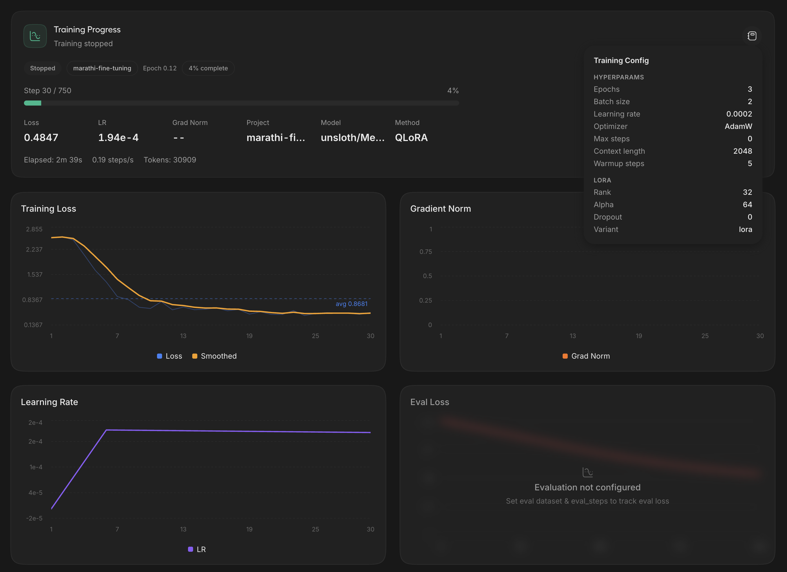

Fixing Marathi text-to-speech
before a single sound is made
Off-the-shelf TTS reads Marathi with a Hindi accent, a flat monotone, and mangled numbers and loanwords. This project fixes it at the text layer — an LLM rewrites raw, messy Marathi into phonetically accurate, pause-annotated Devanagari that any TTS engine synthesizes far more naturally.
Type Marathi text, hear it normalized and spoken
Runs the fine-tuned normalizer and edge-tts locally — nothing leaves
this machine.
Same voice, same sentence — only the text changes
Both clips below use the identical off-the-shelf Marathi neural voice. The only difference is whether the text was normalized first.
| Problem | Typical TTS behavior | Normalized pipeline |
|---|---|---|
Retroflex ळ | Flattened to ल (कमल not कमळ) | Preserved correctly |
| Numbers & times | Read digit-by-digit or misread | Spoken-form expansion |
| English loanwords | Foreign accent, mispronounced | Natural Devanagari transliteration |
| Pauses & rhythm | Flat, no breathing room | [pause] tags at clause boundaries |
Conjuncts (ज्ञा, क्ष) | Often mangled | Rendered accurately |
1,998 instruction pairs, generated and validated with Gemini
A two-step Gemini pipeline builds the training data: first generating diverse raw Marathi sentences (mixing numbers, times, currency, English loanwords across statements, questions, exclamations and commands), then normalizing each one into clean, pause-annotated Devanagari.
{
"instruction": "Convert the raw Marathi text into phonetically normalized, speech-ready Devanagari text with pause annotations for TTS.",
"input": "आज Sunday असल्याने Traffic खूप कमी आहे, आपण १२:३० पर्यंत Park मध्ये पोहोचू.",
"output": "आज संडे असल्याने ट्रॅफिक खूप कमी आहे, [pause] आपण बारा वाजून तीस मिनिटांपर्यंत पार्क मध्ये पोहोचू."
}
EDA before it ever reaches training
Every generation run is validated before use — duplicate detection, pause-tag coverage, sentence-type balance, and residual-English leak checks.
Sentence type mix
[pause] tags per output
QLoRA fine-tuning, running locally
The normalization task is being distilled into Llama-3.1-8B via QLoRA in Unsloth Studio — running entirely on-device on Apple Silicon, no cloud GPU required.


A three-stage pipeline to human-sounding Marathi TTS
The normalization dataset and model are the highest-leverage piece of this chain — most of the "robotic accent" complaints against Marathi TTS trace back to bad input text, not a bad voice model.
1,998 validated instruction pairs
QLoRA on Llama-3.1-8B, local
F5-TTS / Kokoro / XTTS